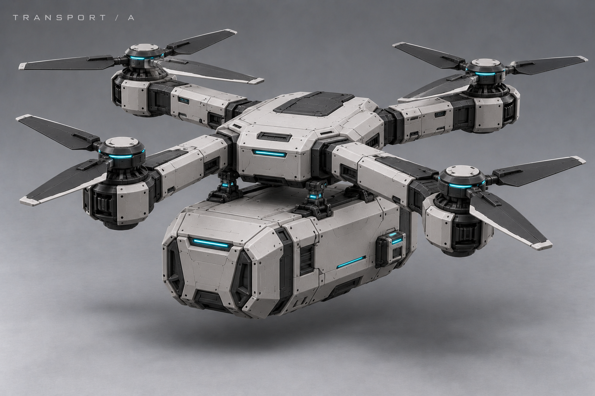
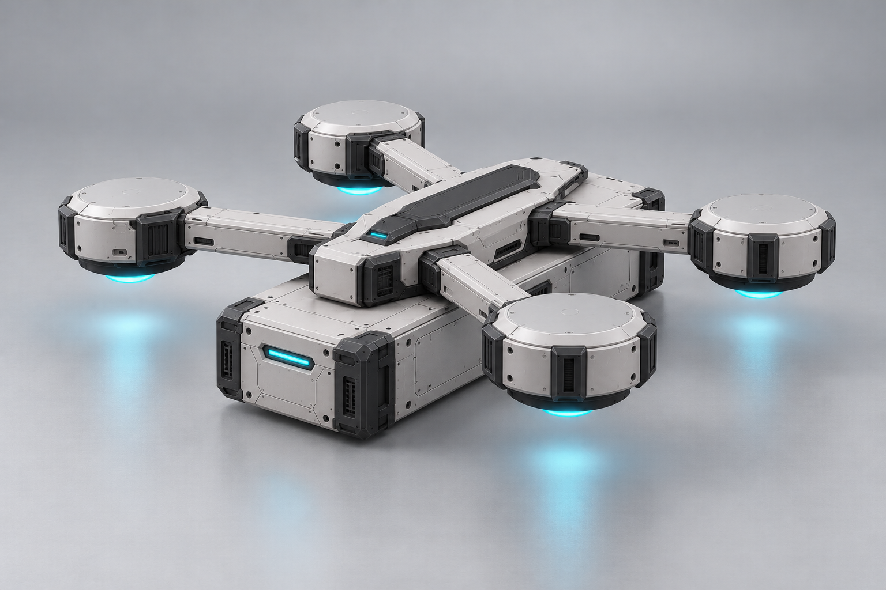
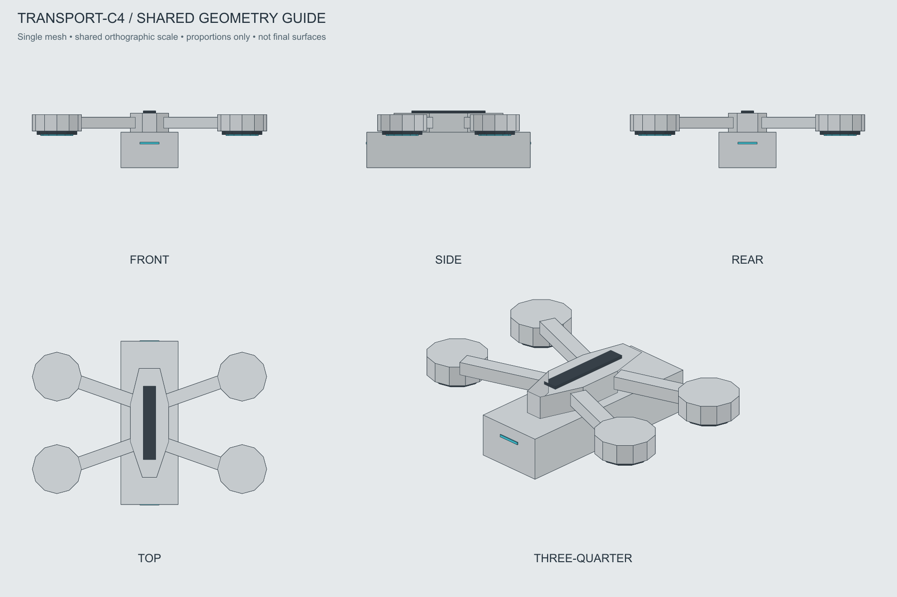
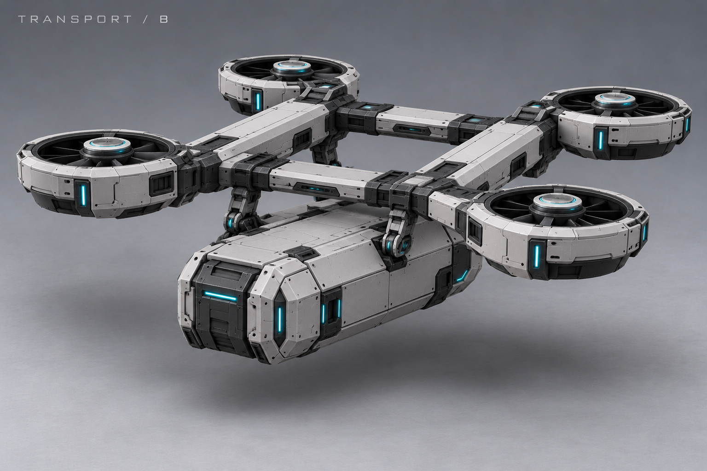
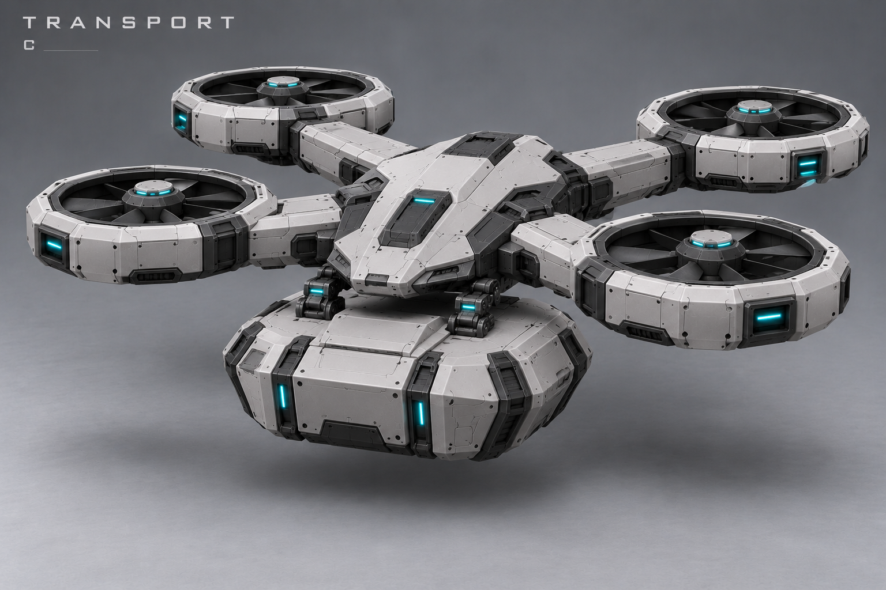
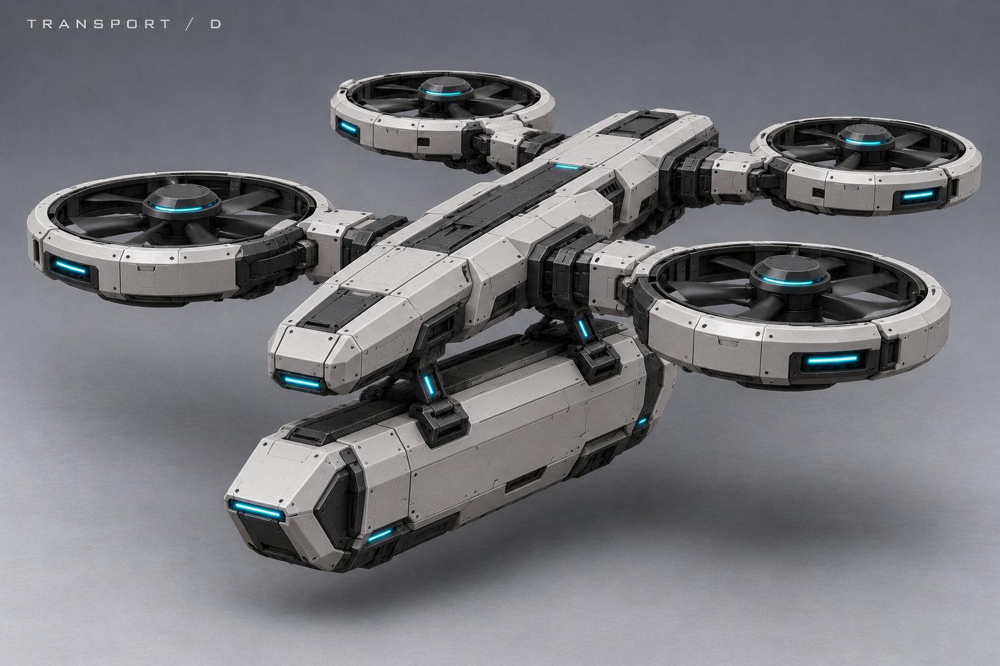
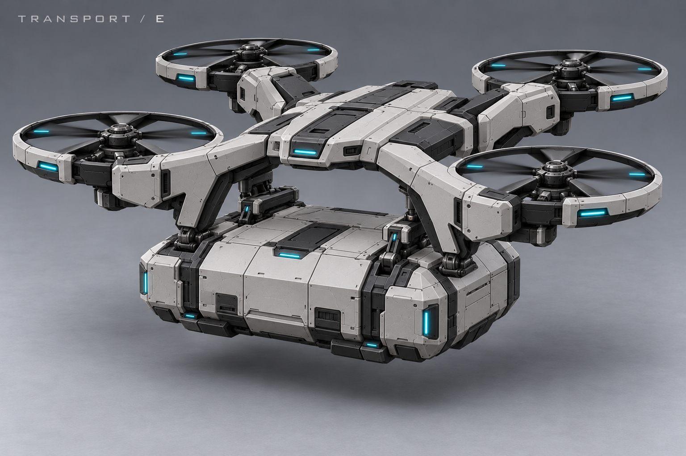
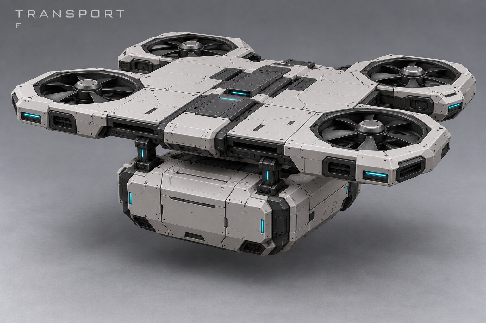

A · Крестовина


Открытые винты, диагональная крестовина и глубокий компактный контейнер.
Это история снятого направления. Открыть восемь новых направлений A–H
28 октября 2026 · квадрокоптер со съёмным контейнером снизу · прежние A–F и C2–C4, отменённые как направление внешности.
Сравниваем силуэт, четыре подъёмных ротора, читаемость отдельного нижнего контейнера со скрытым креплением. Контейнер должен отделяться, оставляя летящий корпус; после выбора будут нужны отдельные согласованные виды и состояния. Превращение в рампу и постепенное лечение пассажиров из локального запаса заданы в дизайне, но эти картинки ещё не определяют их конструкцию и анимацию. Масштаб, вместимость и характеристики не выбраны.
C4 на просмотр: четыре закрытых репульсора; более широкий и высокий прямоугольный контейнер. Равные выступы, общая ось и постоянная ширина зафиксированы в контрольном каркасе с пятью ракурсами. Художественный визуал сверять с ним.

Каркас фиксирует равные выступы, общую ось и одинаковую ширину торцов. Он не является детальной моделью художественного визуала.


Открытые винты, диагональная крестовина и глубокий компактный контейнер.

Две продольные балки, четыре кольцевых вентилятора, контейнер между балками снизу.

Широко разнесённые кольцевые роторы и короткий широкий контейнер.

Вытянутый несущий хребет и длинный узкий контейнер.

Высокая несущая скоба с тонкими защитными ободами винтов; заметное пространство над контейнером.

Плоская несущая платформа с четырьмя встроенными вентиляторами и контейнером снизу.